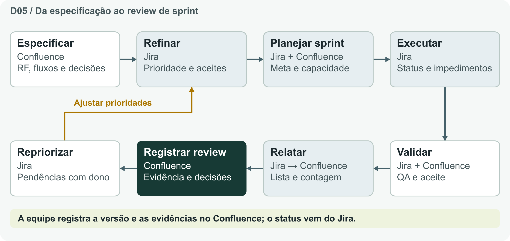

Equipe Onix - 35 · HackaRun 2026 · Missão 1
Planejamento e sprint

Sequência de trabalho
| Fase | Meta | Seleção inicial |
|---|---|---|
| M1 · Planejamento | Organizar problema, telas, requisitos e gestão do projeto. Evidência: PDF e artefatos de planejamento conferidos. | B01, B11, B13 e B14 |
| M2 · Sprint 1 | Validar o fluxo funcional com dados fictícios após a liberação oficial. Evidência: execução, casos de aceite e correções. | B02 a B07 e B15; B09 se couber |
| M3 · Sprint 2 | Consolidar a entrega final após a liberação oficial. Evidência: repositório, execução, documentação e vídeo. | B16; B10 se houver capacidade |
| Piloto físico | Validar quiosque, rede, operação e privacidade com a TI e a operação autorizadas. | B08 |
| Evolução | Repriorizar integrações depois de validar utilidade e dependências. | B12 |
Roteiro de planejamento
- Confirmar a liberação oficial da missão e a capacidade do time.
- Definir uma meta demonstrável e escolher itens pela prioridade e dependências.
- Confirmar um responsável, critério de aceite, evidência e documentação para cada item.
- Criar a sprint no Jira, registrar seu ID e inserir o filtro na página de review.
- Em caso de bloqueio, sinalizar no Jira e registrar motivo e próximo passo. Renegociar escopo antes de cortar privacidade e qualidade.
Registro da sprint
| Campo | Preencher durante o planejamento |
|---|---|
| Sprint / ID | Nome e ID real no Jira |
| Meta | Resultado observável |
| Janela | Início e fim confirmados |
| Capacidade | Disponibilidade e compromissos |
| Itens e riscos | Chaves reais, dependências e itens fora do escopo |
| Review | Quando, onde e evidências a mostrar |
Pronto para iniciar: escopo, dependências, dono e aceite claros. Concluído: aceite conferido por Luis, evidência anexada, documentação atualizada e status no Jira.